第 1 页
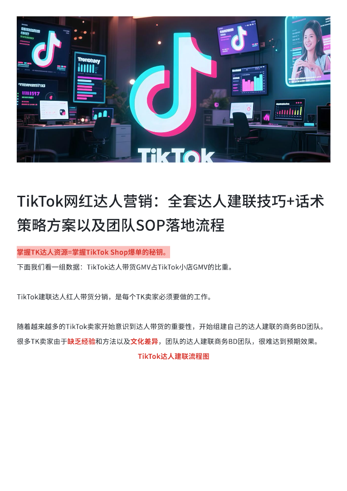
查看文字
TikTok网红达人营销：全套达人建联技巧+话术策略方案以及团队SOP落地流程⟦U+0001⟧⟦U+0001⟧掌握TK达人资源=掌握TikTok⟦U+0001⟧Shop爆单的秘钥。⟦U+0001⟧下面我们看一组数据：TikTok达人带货GMV占TikTok小店GMV的比重。⟦U+0001⟧TikTok建联达人红人带货分销，是每个TK卖家必须要做的工作。⟦U+0001⟧随着越来越多的TikTok卖家开始意识到达人带货的重要性，开始组建自己的达人建联的商务BD团队。⟦U+0001⟧很多TK卖家由于缺乏经验和方法以及文化差异，团队的达人建联商务BD团队，很难达到预期效果。⟦U+0001⟧TikTok达人建联流程图⟦U+0001⟧
第 2 页
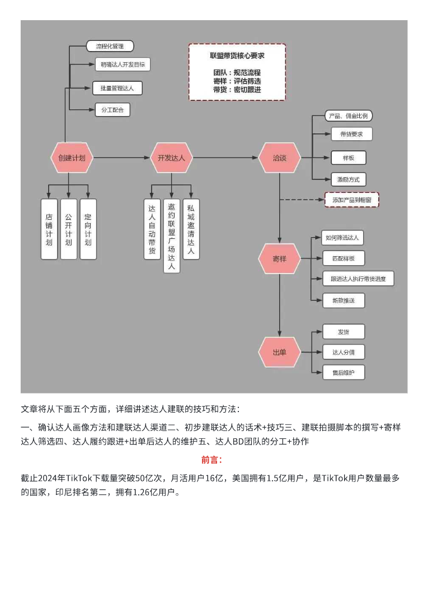
查看文字
文章将从下面五个方面，详细讲述达人建联的技巧和方法：一、确认达人画像方法和建联达人渠道二、初步建联达人的话术+技巧三、建联拍摄脚本的撰写+寄样达人筛选四、达人履约跟进+出单后达人的维护五、达人BD团队的分工+协作⟦U+0001⟧前言：截止2024年TikTok下载量突破50亿次，月活用戶16亿，美国拥有1.5亿用戶，是TikTok用戶数量最多的国家，印尼排名第二，拥有1.26亿用戶。⟦U+0001⟧
第 3 页
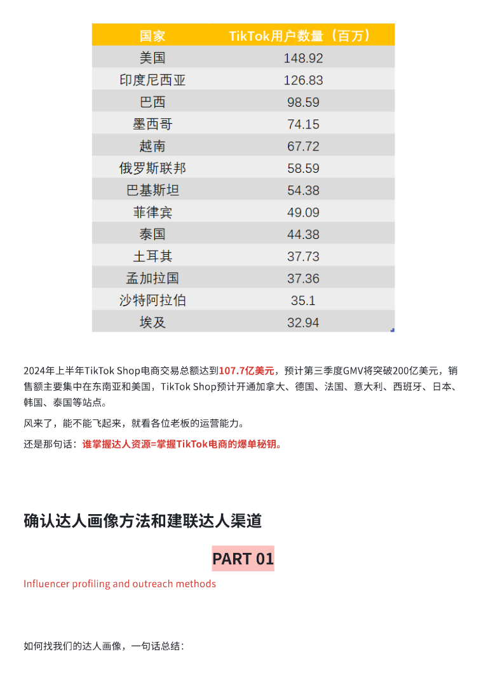
查看文字
2024年上半年TikTok⟦U+0001⟧Shop电商交易总额达到107.7亿美元，预计第三季度GMV将突破200亿美元，销售额主要集中在东南亚和美国，TikTok⟦U+0001⟧Shop预计开通加拿大、德国、法国、意大利、西班牙、日本、韩国、泰国等站点。⻛来了，能不能⻜起来，就看各位老板的运营能力。还是那句话：谁掌握达人资源=掌握TikTok电商的爆单秘钥。⟦U+0001⟧确认达人画像方法和建联达人渠道PART⟦U+0001⟧01⟦U+0001⟧Influencer⟦U+0001⟧profiling⟦U+0001⟧and⟦U+0001⟧outreach⟦U+0001⟧methods⟦U+0001⟧如何找我们的达人画像，一句话总结：
第 4 页
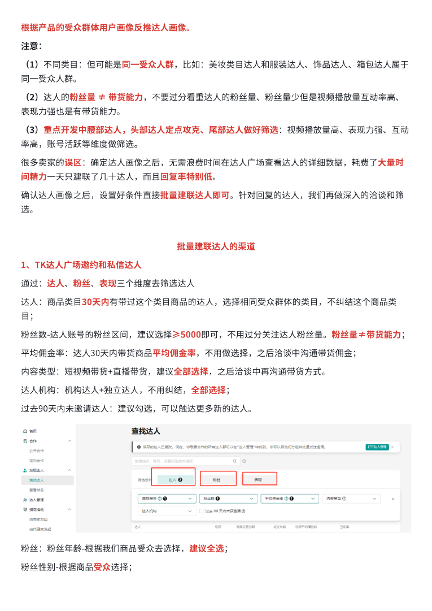
查看文字
根据产品的受众群体用戶画像反推达人画像。注意：（1）不同类目：但可能是同一受众人群，比如：美妆类目达人和服装达人、饰品达人、箱包达人属于同一受众人群。（2）达人的粉丝量⟦U+0001⟧≠⟦U+0001⟧带货能力，不要过分看重达人的粉丝量、粉丝量少但是视频播放量互动率高、表现力强也是有带货能力。（3）重点开发中腰部达人，头部达人定点攻克、尾部达人做好筛选：视频播放量高、表现力强、互动率高，账号活跃等维度做筛选。很多卖家的误区：确定达人画像之后，无需浪费时间在达人广场查看达人的详细数据，耗费了大量时间精力一天只建联了几十达人，而且回复率特别低。确认达人画像之后，设置好条件直接批量建联达人即可。针对回复的达人，我们再做深入的洽谈和筛选。批量建联达人的渠道1、TK达人广场邀约和私信达人⟦U+0001⟧通过：达人、粉丝、表现三个维度去筛选达人达人：商品类目30天内有带过这个类目商品的达人，选择相同受众群体的类目，不纠结这个商品类目；粉丝数-达人账号的粉丝区间，建议选择≥5000即可，不用过分关注达人粉丝量。粉丝量≠带货能力；⟦U+0001⟧平均佣金率：达人30天内带货商品平均佣金率，不用做选择，之后洽谈中沟通带货佣金；⟦U+0001⟧内容类型：短视频带货+直播带货，建议全部选择，之后洽谈中再沟通带货方式。⟦U+0001⟧达人机构：机构达人+独立达人，不用纠结，全部选择；⟦U+0001⟧过去90天内未邀请达人：建议勾选，可以触达更多新的达人。⟦U+0001⟧粉丝：粉丝年龄-根据我们商品受众去选择，建议全选；⟦U+0001⟧粉丝性别-根据商品受众选择；⟦U+0001⟧
第 5 页
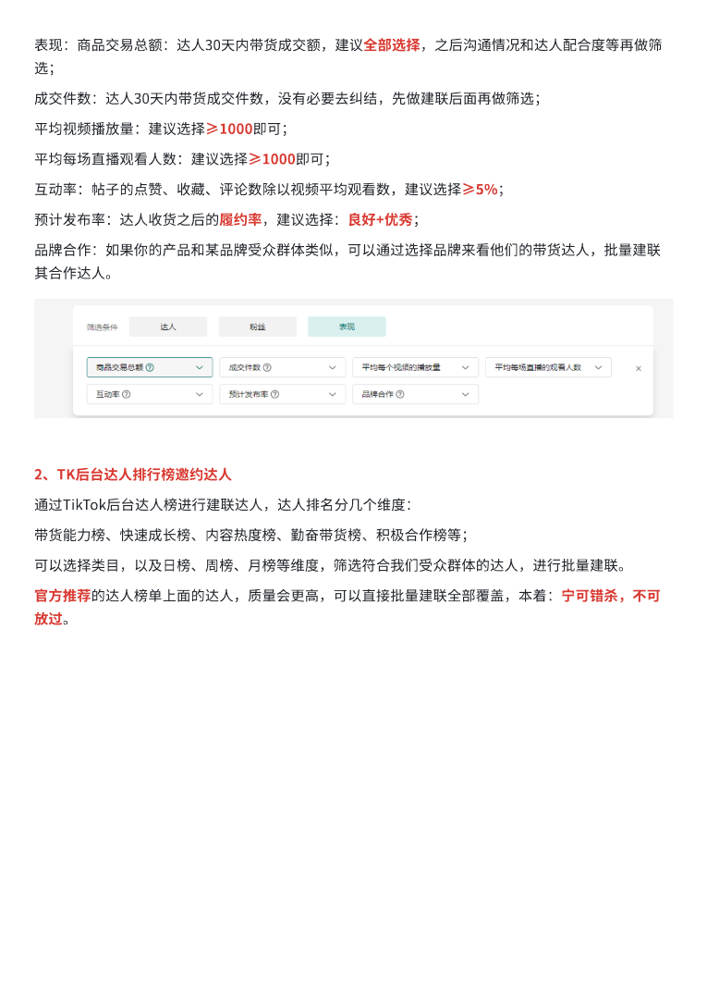
查看文字
表现：商品交易总额：达人30天内带货成交额，建议全部选择，之后沟通情况和达人配合度等再做筛选；成交件数：达人30天内带货成交件数，没有必要去纠结，先做建联后面再做筛选；⟦U+0001⟧平均视频播放量：建议选择≥1000即可；⟦U+0001⟧平均每场直播观看人数：建议选择≥1000即可；⟦U+0001⟧互动率：帖子的点赞、收藏、评论数除以视频平均观看数，建议选择≥5%；⟦U+0001⟧预计发布率：达人收货之后的履约率，建议选择：良好+优秀；⟦U+0001⟧品牌合作：如果你的产品和某品牌受众群体类似，可以通过选择品牌来看他们的带货达人，批量建联其合作达人。2、TK后台达人排行榜邀约达人⟦U+0001⟧通过TikTok后台达人榜进行建联达人，达人排名分几个维度：⟦U+0001⟧带货能力榜、快速成⻓榜、内容热度榜、勤奋带货榜、积极合作榜等；可以选择类目，以及日榜、周榜、月榜等维度，筛选符合我们受众群体的达人，进行批量建联。官方推荐的达人榜单上面的达人，质量会更高，可以直接批量建联全部覆盖，本着：宁可错杀，不可放过。
第 6 页
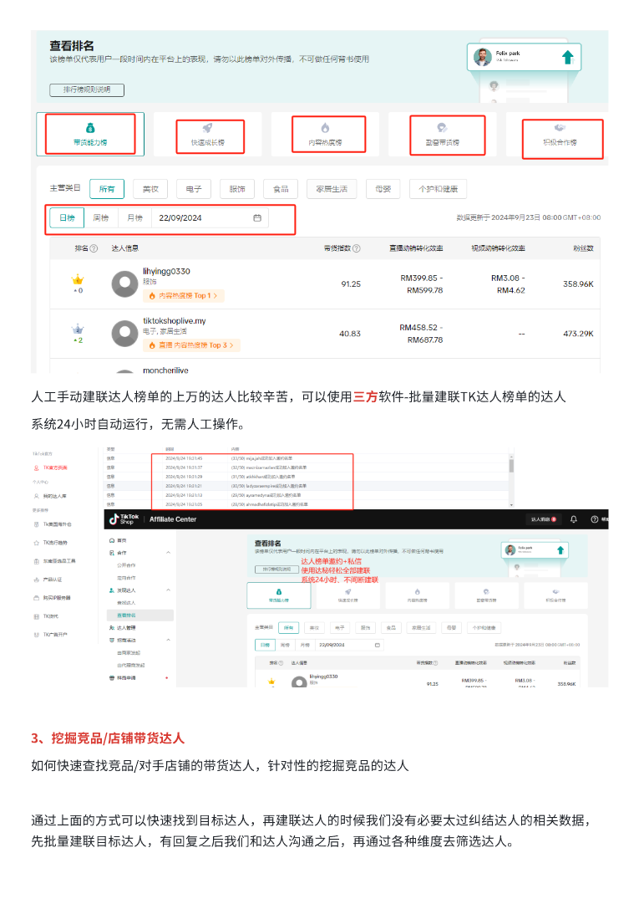
查看文字
人工手动建联达人榜单的上万的达人比较辛苦，可以使用三方软件-批量建联TK达人榜单的达人⟦U+0001⟧系统24小时自动运行，无需人工操作。⟦U+0001⟧3、挖掘竞品/店铺带货达人⟦U+0001⟧如何快速查找竞品/对手店铺的带货达人，针对性的挖掘竞品的达人⟦U+0001⟧通过上面的方式可以快速找到目标达人，再建联达人的时候我们没有必要太过纠结达人的相关数据，先批量建联目标达人，有回复之后我们和达人沟通之后，再通过各种维度去筛选达人。
第 7 页
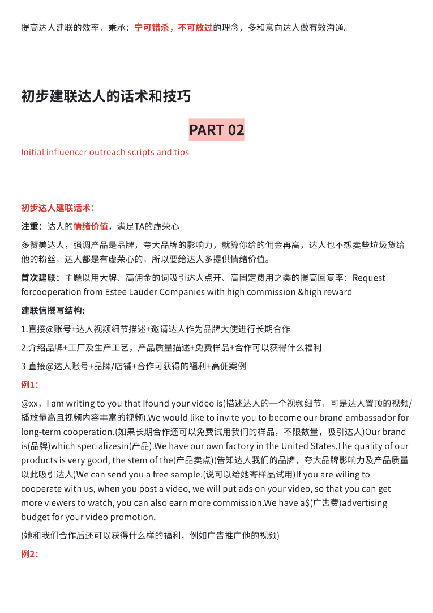
查看文字
提高达人建联的效率，秉承：宁可错杀，不可放过的理念，多和意向达人做有效沟通。初步建联达人的话术和技巧PART⟦U+0001⟧02⟦U+0001⟧Initial⟦U+0001⟧influencer⟦U+0001⟧outreach⟦U+0001⟧scripts⟦U+0001⟧and⟦U+0001⟧tips⟦U+0001⟧初步达人建联话术：注重：达人的情绪价值，满足TA的虚荣心⟦U+0001⟧多赞美达人，强调产品是品牌，夸大品牌的影响力，就算你给的佣金再高，达人也不想卖些垃圾货给他的粉丝，达人都是有虚荣心的，所以要给达人多提供情绪价值。首次建联：主题以用大牌、高佣金的词吸引达人点开、高固定费用之类的提高回复率：Request⟦U+0001⟧forcooperation⟦U+0001⟧from⟦U+0001⟧Estee⟦U+0001⟧Lauder⟦U+0001⟧Companies⟦U+0001⟧with⟦U+0001⟧high⟦U+0001⟧commission⟦U+0001⟧&high⟦U+0001⟧reward⟦U+0001⟧建联信撰写结构:⟦U+0001⟧1.直接@账号+达人视频细节描述+邀请达人作为品牌大使进行⻓期合作⟦U+0001⟧2.介绍品牌+工厂及生产工艺，产品质量描述+免费样品+合作可以获得什么福利⟦U+0001⟧3.直接@达人账号+品牌/店铺+合作可获得的福利+高佣案例⟦U+0001⟧例1：⟦U+0001⟧@xx，I⟦U+0001⟧am⟦U+0001⟧writing⟦U+0001⟧to⟦U+0001⟧you⟦U+0001⟧that⟦U+0001⟧Ifound⟦U+0001⟧your⟦U+0001⟧video⟦U+0001⟧is(描述达人的一个视频细节，可是达人置顶的视频/播放量高且视频内容丰富的视频).We⟦U+0001⟧would⟦U+0001⟧like⟦U+0001⟧to⟦U+0001⟧invite⟦U+0001⟧you⟦U+0001⟧to⟦U+0001⟧become⟦U+0001⟧our⟦U+0001⟧brand⟦U+0001⟧ambassador⟦U+0001⟧for⟦U+0001⟧long-term⟦U+0001⟧cooperation.(如果⻓期合作还可以免费试用我们的样品，不限数量，吸引达人)Our⟦U+0001⟧brand⟦U+0001⟧is(品牌)which⟦U+0001⟧specializesin(产品).We⟦U+0001⟧have⟦U+0001⟧our⟦U+0001⟧own⟦U+0001⟧factory⟦U+0001⟧in⟦U+0001⟧the⟦U+0001⟧United⟦U+0001⟧States.The⟦U+0001⟧quality⟦U+0001⟧of⟦U+0001⟧our⟦U+0001⟧products⟦U+0001⟧is⟦U+0001⟧very⟦U+0001⟧good,⟦U+0001⟧the⟦U+0001⟧stem⟦U+0001⟧of⟦U+0001⟧the(产品卖点)(告知达人我们的品牌，夸大品牌影响力及产品质量以此吸引达人)We⟦U+0001⟧can⟦U+0001⟧send⟦U+0001⟧you⟦U+0001⟧a⟦U+0001⟧free⟦U+0001⟧sample.(说可以给她寄样品试用)If⟦U+0001⟧you⟦U+0001⟧are⟦U+0001⟧wiling⟦U+0001⟧to⟦U+0001⟧cooperate⟦U+0001⟧with⟦U+0001⟧us,⟦U+0001⟧when⟦U+0001⟧you⟦U+0001⟧post⟦U+0001⟧a⟦U+0001⟧video,⟦U+0001⟧we⟦U+0001⟧will⟦U+0001⟧put⟦U+0001⟧ads⟦U+0001⟧on⟦U+0001⟧your⟦U+0001⟧video,⟦U+0001⟧so⟦U+0001⟧that⟦U+0001⟧you⟦U+0001⟧can⟦U+0001⟧get⟦U+0001⟧more⟦U+0001⟧viewers⟦U+0001⟧to⟦U+0001⟧watch,⟦U+0001⟧you⟦U+0001⟧can⟦U+0001⟧also⟦U+0001⟧earn⟦U+0001⟧more⟦U+0001⟧commission.We⟦U+0001⟧have⟦U+0001⟧a$(广吿费)advertising⟦U+0001⟧budget⟦U+0001⟧for⟦U+0001⟧your⟦U+0001⟧video⟦U+0001⟧promotion.⟦U+0001⟧(她和我们合作后还可以获得什么样的福利，例如广告推广他的视频)⟦U+0001⟧例2：⟦U+0001⟧
第 8 页
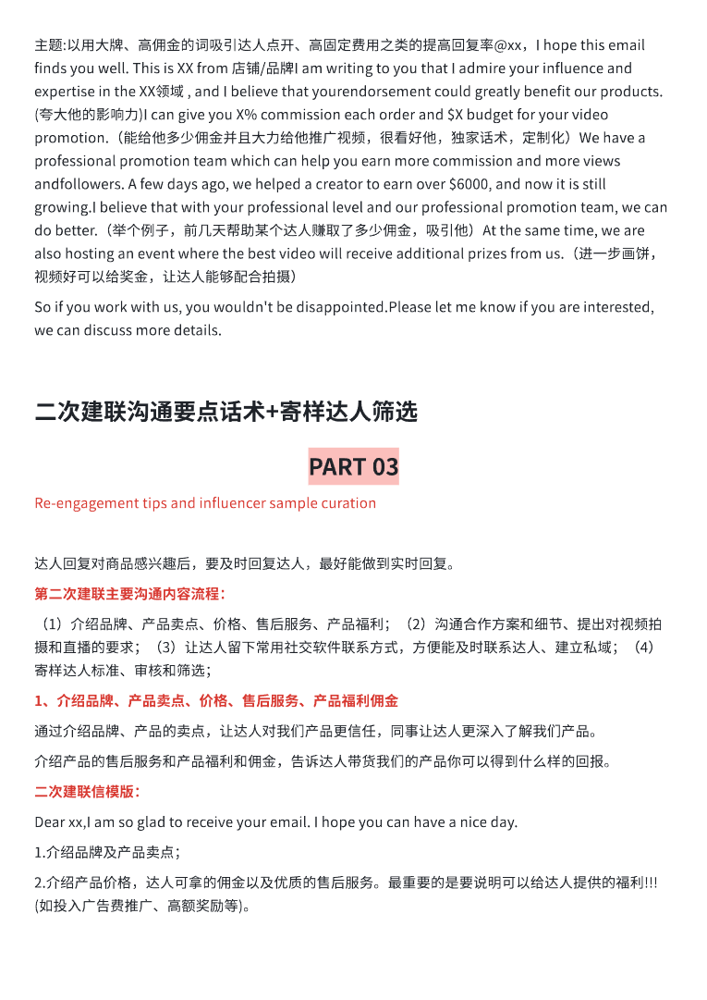
查看文字
主题:以用大牌、高佣金的词吸引达人点开、高固定费用之类的提高回复率@xx，I⟦U+0001⟧hope⟦U+0001⟧this⟦U+0001⟧email⟦U+0001⟧finds⟦U+0001⟧you⟦U+0001⟧well.⟦U+0001⟧This⟦U+0001⟧is⟦U+0001⟧XX⟦U+0001⟧from⟦U+0001⟧店铺/品牌I⟦U+0001⟧am⟦U+0001⟧writing⟦U+0001⟧to⟦U+0001⟧you⟦U+0001⟧that⟦U+0001⟧I⟦U+0001⟧admire⟦U+0001⟧your⟦U+0001⟧influence⟦U+0001⟧and⟦U+0001⟧expertise⟦U+0001⟧in⟦U+0001⟧the⟦U+0001⟧XX领域⟦U+0001⟧,⟦U+0001⟧and⟦U+0001⟧I⟦U+0001⟧believe⟦U+0001⟧that⟦U+0001⟧yourendorsement⟦U+0001⟧could⟦U+0001⟧greatly⟦U+0001⟧benefit⟦U+0001⟧our⟦U+0001⟧products.(夸大他的影响力)I⟦U+0001⟧can⟦U+0001⟧give⟦U+0001⟧you⟦U+0001⟧X%⟦U+0001⟧commission⟦U+0001⟧each⟦U+0001⟧order⟦U+0001⟧and⟦U+0001⟧$X⟦U+0001⟧budget⟦U+0001⟧for⟦U+0001⟧your⟦U+0001⟧video⟦U+0001⟧promotion.（能给他多少佣金并且大力给他推广视频，很看好他，独家话术，定制化）We⟦U+0001⟧have⟦U+0001⟧a⟦U+0001⟧professional⟦U+0001⟧promotion⟦U+0001⟧team⟦U+0001⟧which⟦U+0001⟧can⟦U+0001⟧help⟦U+0001⟧you⟦U+0001⟧earn⟦U+0001⟧more⟦U+0001⟧commission⟦U+0001⟧and⟦U+0001⟧more⟦U+0001⟧views⟦U+0001⟧andfollowers.⟦U+0001⟧A⟦U+0001⟧few⟦U+0001⟧days⟦U+0001⟧ago,⟦U+0001⟧we⟦U+0001⟧helped⟦U+0001⟧a⟦U+0001⟧creator⟦U+0001⟧to⟦U+0001⟧earn⟦U+0001⟧over⟦U+0001⟧$6000,⟦U+0001⟧and⟦U+0001⟧now⟦U+0001⟧it⟦U+0001⟧is⟦U+0001⟧still⟦U+0001⟧growing.I⟦U+0001⟧believe⟦U+0001⟧that⟦U+0001⟧with⟦U+0001⟧your⟦U+0001⟧professional⟦U+0001⟧level⟦U+0001⟧and⟦U+0001⟧our⟦U+0001⟧professional⟦U+0001⟧promotion⟦U+0001⟧team,⟦U+0001⟧we⟦U+0001⟧can⟦U+0001⟧do⟦U+0001⟧better.（举个例子，前几天帮助某个达人赚取了多少佣金，吸引他）At⟦U+0001⟧the⟦U+0001⟧same⟦U+0001⟧time,⟦U+0001⟧we⟦U+0001⟧are⟦U+0001⟧also⟦U+0001⟧hosting⟦U+0001⟧an⟦U+0001⟧event⟦U+0001⟧where⟦U+0001⟧the⟦U+0001⟧best⟦U+0001⟧video⟦U+0001⟧will⟦U+0001⟧receive⟦U+0001⟧additional⟦U+0001⟧prizes⟦U+0001⟧from⟦U+0001⟧us.（进一步画饼，视频好可以给奖金，让达人能够配合拍摄）So⟦U+0001⟧if⟦U+0001⟧you⟦U+0001⟧work⟦U+0001⟧with⟦U+0001⟧us,⟦U+0001⟧you⟦U+0001⟧wouldn't⟦U+0001⟧be⟦U+0001⟧disappointed.Please⟦U+0001⟧let⟦U+0001⟧me⟦U+0001⟧know⟦U+0001⟧if⟦U+0001⟧you⟦U+0001⟧are⟦U+0001⟧interested,⟦U+0001⟧we⟦U+0001⟧can⟦U+0001⟧discuss⟦U+0001⟧more⟦U+0001⟧details.⟦U+0001⟧二次建联沟通要点话术+寄样达人筛选⟦U+0001⟧PART⟦U+0001⟧03⟦U+0001⟧Re-engagement⟦U+0001⟧tips⟦U+0001⟧and⟦U+0001⟧influencer⟦U+0001⟧sample⟦U+0001⟧curation⟦U+0001⟧达人回复对商品感兴趣后，要及时回复达人，最好能做到实时回复。第二次建联主要沟通内容流程：（1）介绍品牌、产品卖点、价格、售后服务、产品福利；（2）沟通合作方案和细节、提出对视频拍摄和直播的要求；（3）让达人留下常用社交软件联系方式，方便能及时联系达人、建立私域；（4）寄样达人标准、审核和筛选；1、介绍品牌、产品卖点、价格、售后服务、产品福利佣金⟦U+0001⟧通过介绍品牌、产品的卖点，让达人对我们产品更信任，同事让达人更深入了解我们产品。介绍产品的售后服务和产品福利和佣金，告诉达人带货我们的产品你可以得到什么样的回报。二次建联信模版：Dear⟦U+0001⟧xx,I⟦U+0001⟧am⟦U+0001⟧so⟦U+0001⟧glad⟦U+0001⟧to⟦U+0001⟧receive⟦U+0001⟧your⟦U+0001⟧email.⟦U+0001⟧I⟦U+0001⟧hope⟦U+0001⟧you⟦U+0001⟧can⟦U+0001⟧have⟦U+0001⟧a⟦U+0001⟧nice⟦U+0001⟧day.⟦U+0001⟧1.介绍品牌及产品卖点；⟦U+0001⟧2.介绍产品价格，达人可拿的佣金以及优质的售后服务。最重要的是要说明可以给达人提供的福利!!!(如投入广告费推广、高额奖励等)。⟦U+0001⟧
第 9 页
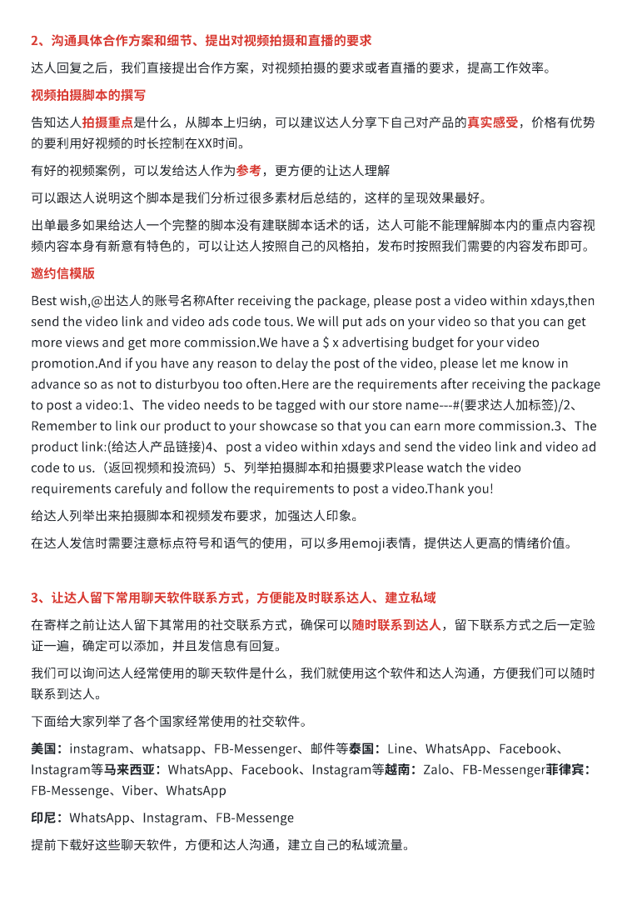
查看文字
2、沟通具体合作方案和细节、提出对视频拍摄和直播的要求⟦U+0001⟧达人回复之后，我们直接提出合作方案，对视频拍摄的要求或者直播的要求，提高工作效率。视频拍摄脚本的撰写告知达人拍摄重点是什么，从脚本上归纳，可以建议达人分享下自己对产品的真实感受，价格有优势的要利用好视频的时⻓控制在XX时间。⟦U+0001⟧有好的视频案例，可以发给达人作为参考，更方便的让达人理解可以跟达人说明这个脚本是我们分析过很多素材后总结的，这样的呈现效果最好。出单最多如果给达人一个完整的脚本没有建联脚本话术的话，达人可能不能理解脚本内的重点内容视频内容本身有新意有特色的，可以让达人按照自己的⻛格拍，发布时按照我们需要的内容发布即可。邀约信模版Best⟦U+0001⟧wish,@出达人的账号名称After⟦U+0001⟧receiving⟦U+0001⟧the⟦U+0001⟧package,⟦U+0001⟧please⟦U+0001⟧post⟦U+0001⟧a⟦U+0001⟧video⟦U+0001⟧within⟦U+0001⟧xdays,then⟦U+0001⟧send⟦U+0001⟧the⟦U+0001⟧video⟦U+0001⟧link⟦U+0001⟧and⟦U+0001⟧video⟦U+0001⟧ads⟦U+0001⟧code⟦U+0001⟧tous.⟦U+0001⟧We⟦U+0001⟧will⟦U+0001⟧put⟦U+0001⟧ads⟦U+0001⟧on⟦U+0001⟧your⟦U+0001⟧video⟦U+0001⟧so⟦U+0001⟧that⟦U+0001⟧you⟦U+0001⟧can⟦U+0001⟧get⟦U+0001⟧more⟦U+0001⟧views⟦U+0001⟧and⟦U+0001⟧get⟦U+0001⟧more⟦U+0001⟧commission.We⟦U+0001⟧have⟦U+0001⟧a⟦U+0001⟧$⟦U+0001⟧x⟦U+0001⟧advertising⟦U+0001⟧budget⟦U+0001⟧for⟦U+0001⟧your⟦U+0001⟧video⟦U+0001⟧promotion.And⟦U+0001⟧if⟦U+0001⟧you⟦U+0001⟧have⟦U+0001⟧any⟦U+0001⟧reason⟦U+0001⟧to⟦U+0001⟧delay⟦U+0001⟧the⟦U+0001⟧post⟦U+0001⟧of⟦U+0001⟧the⟦U+0001⟧video,⟦U+0001⟧please⟦U+0001⟧let⟦U+0001⟧me⟦U+0001⟧know⟦U+0001⟧in⟦U+0001⟧advance⟦U+0001⟧so⟦U+0001⟧as⟦U+0001⟧not⟦U+0001⟧to⟦U+0001⟧disturbyou⟦U+0001⟧too⟦U+0001⟧often.Here⟦U+0001⟧are⟦U+0001⟧the⟦U+0001⟧requirements⟦U+0001⟧after⟦U+0001⟧receiving⟦U+0001⟧the⟦U+0001⟧package⟦U+0001⟧to⟦U+0001⟧post⟦U+0001⟧a⟦U+0001⟧video:1、The⟦U+0001⟧video⟦U+0001⟧needs⟦U+0001⟧to⟦U+0001⟧be⟦U+0001⟧tagged⟦U+0001⟧with⟦U+0001⟧our⟦U+0001⟧store⟦U+0001⟧name---#(要求达人加标签)/2、Remember⟦U+0001⟧to⟦U+0001⟧link⟦U+0001⟧our⟦U+0001⟧product⟦U+0001⟧to⟦U+0001⟧your⟦U+0001⟧showcase⟦U+0001⟧so⟦U+0001⟧that⟦U+0001⟧you⟦U+0001⟧can⟦U+0001⟧earn⟦U+0001⟧more⟦U+0001⟧commission.3、The⟦U+0001⟧product⟦U+0001⟧link:(给达人产品链接)4、post⟦U+0001⟧a⟦U+0001⟧video⟦U+0001⟧within⟦U+0001⟧xdays⟦U+0001⟧and⟦U+0001⟧send⟦U+0001⟧the⟦U+0001⟧video⟦U+0001⟧link⟦U+0001⟧and⟦U+0001⟧video⟦U+0001⟧ad⟦U+0001⟧code⟦U+0001⟧to⟦U+0001⟧us.（返回视频和投流码）5、列举拍摄脚本和拍摄要求Please⟦U+0001⟧watch⟦U+0001⟧the⟦U+0001⟧video⟦U+0001⟧requirements⟦U+0001⟧carefuly⟦U+0001⟧and⟦U+0001⟧follow⟦U+0001⟧the⟦U+0001⟧requirements⟦U+0001⟧to⟦U+0001⟧post⟦U+0001⟧a⟦U+0001⟧video.Thank⟦U+0001⟧you!⟦U+0001⟧给达人列举出来拍摄脚本和视频发布要求，加强达人印象。在达人发信时需要注意标点符号和语气的使用，可以多用emoji表情，提供达人更高的情绪价值。⟦U+0001⟧3、让达人留下常用聊天软件联系方式，方便能及时联系达人、建立私域⟦U+0001⟧在寄样之前让达人留下其常用的社交联系方式，确保可以随时联系到达人，留下联系方式之后一定验证一遍，确定可以添加，并且发信息有回复。我们可以询问达人经常使用的聊天软件是什么，我们就使用这个软件和达人沟通，方便我们可以随时联系到达人。下面给大家列举了各个国家经常使用的社交软件。美国：instagram、whatsapp、FB-Messenger、邮件等泰国：Line、WhatsApp、Facebook、Instagram等⻢来西亚：WhatsApp、Facebook、Instagram等越南：Zalo、FB-Messenger菲律宾：FB-Messenge、Viber、WhatsApp印尼：WhatsApp、Instagram、FB-Messenge⟦U+0001⟧提前下载好这些聊天软件，方便和达人沟通，建立自己的私域流量。
第 10 页
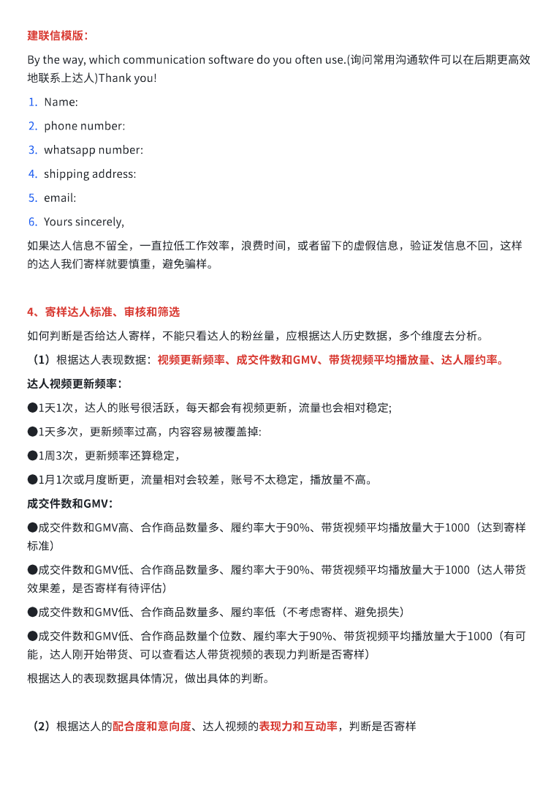
查看文字
建联信模版：By⟦U+0001⟧the⟦U+0001⟧way,⟦U+0001⟧which⟦U+0001⟧communication⟦U+0001⟧software⟦U+0001⟧do⟦U+0001⟧you⟦U+0001⟧often⟦U+0001⟧use.(询问常用沟通软件可以在后期更高效地联系上达人)Thank⟦U+0001⟧you!⟦U+0001⟧1.Name:⟦U+0001⟧2.phone⟦U+0001⟧number:⟦U+0001⟧3.whatsapp⟦U+0001⟧number:⟦U+0001⟧4.shipping⟦U+0001⟧address:⟦U+0001⟧5.email:⟦U+0001⟧6.Yours⟦U+0001⟧sincerely,⟦U+0001⟧如果达人信息不留全，一直拉低工作效率，浪费时间，或者留下的虚假信息，验证发信息不回，这样的达人我们寄样就要慎重，避免骗样。4、寄样达人标准、审核和筛选⟦U+0001⟧如何判断是否给达人寄样，不能只看达人的粉丝量，应根据达人历史数据，多个维度去分析。（1）根据达人表现数据：视频更新频率、成交件数和GMV、带货视频平均播放量、达人履约率。⟦U+0001⟧达人视频更新频率：●1天1次，达人的账号很活跃，每天都会有视频更新，流量也会相对稳定;⟦U+0001⟧●1天多次，更新频率过高，内容容易被覆盖掉:⟦U+0001⟧●1周3次，更新频率还算稳定，⟦U+0001⟧●1月1次或月度断更，流量相对会较差，账号不太稳定，播放量不高。⟦U+0001⟧成交件数和GMV：⟦U+0001⟧●成交件数和GMV高、合作商品数量多、履约率大于90%、带货视频平均播放量大于1000（达到寄样标准）●成交件数和GMV低、合作商品数量多、履约率大于90%、带货视频平均播放量大于1000（达人带货效果差，是否寄样有待评估）●成交件数和GMV低、合作商品数量多、履约率低（不考虑寄样、避免损失）⟦U+0001⟧●成交件数和GMV低、合作商品数量个位数、履约率大于90%、带货视频平均播放量大于1000（有可能，达人刚开始带货、可以查看达人带货视频的表现力判断是否寄样）根据达人的表现数据具体情况，做出具体的判断。（2）根据达人的配合度和意向度、达人视频的表现力和互动率，判断是否寄样⟦U+0001⟧
第 11 页
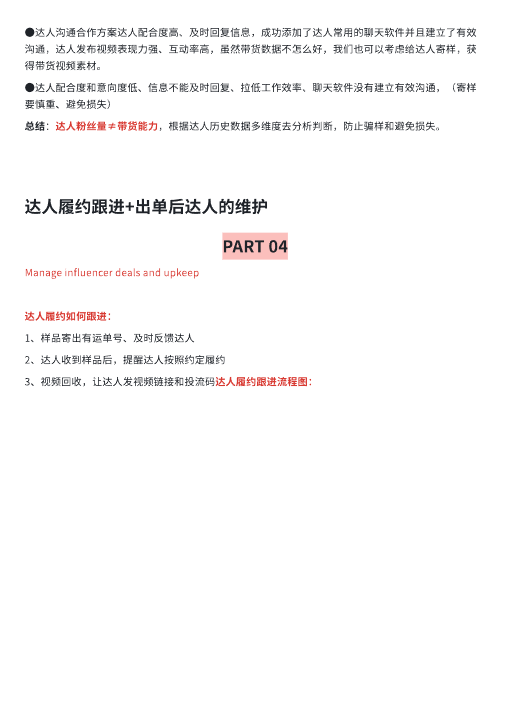
查看文字
●达人沟通合作方案达人配合度高、及时回复信息，成功添加了达人常用的聊天软件并且建立了有效沟通，达人发布视频表现力强、互动率高，虽然带货数据不怎么好，我们也可以考虑给达人寄样，获得带货视频素材。●达人配合度和意向度低、信息不能及时回复、拉低工作效率、聊天软件没有建立有效沟通，（寄样要慎重、避免损失）总结：达人粉丝量≠带货能力，根据达人历史数据多维度去分析判断，防止骗样和避免损失。达人履约跟进+出单后达人的维护⟦U+0001⟧PART⟦U+0001⟧04⟦U+0001⟧Manage⟦U+0001⟧influencer⟦U+0001⟧deals⟦U+0001⟧and⟦U+0001⟧upkeep⟦U+0001⟧达人履约如何跟进：1、样品寄出有运单号、及时反馈达人⟦U+0001⟧2、达人收到样品后，提醒达人按照约定履约⟦U+0001⟧3、视频回收，让达人发视频链接和投流码达人履约跟进流程图：⟦U+0001⟧
第 12 页
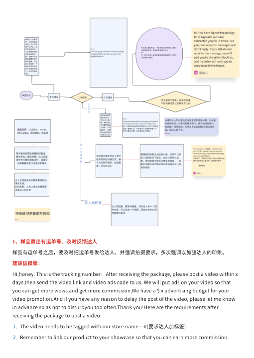
查看文字
1、样品寄出有运单号、及时反馈达人⟦U+0001⟧样品有运单号之后，要及时把运单号发给达人，并强调拍摄要求，多次强调以加强达人的印象。建联信模版：Hi,honey.⟦U+0001⟧This⟦U+0001⟧is⟦U+0001⟧the⟦U+0001⟧tracking⟦U+0001⟧number：After⟦U+0001⟧receiving⟦U+0001⟧the⟦U+0001⟧package,⟦U+0001⟧please⟦U+0001⟧post⟦U+0001⟧a⟦U+0001⟧video⟦U+0001⟧within⟦U+0001⟧x⟦U+0001⟧days,then⟦U+0001⟧send⟦U+0001⟧the⟦U+0001⟧video⟦U+0001⟧link⟦U+0001⟧and⟦U+0001⟧video⟦U+0001⟧ads⟦U+0001⟧code⟦U+0001⟧to⟦U+0001⟧us.⟦U+0001⟧We⟦U+0001⟧will⟦U+0001⟧put⟦U+0001⟧ads⟦U+0001⟧on⟦U+0001⟧your⟦U+0001⟧video⟦U+0001⟧so⟦U+0001⟧that⟦U+0001⟧you⟦U+0001⟧can⟦U+0001⟧get⟦U+0001⟧more⟦U+0001⟧views⟦U+0001⟧and⟦U+0001⟧get⟦U+0001⟧more⟦U+0001⟧commission.We⟦U+0001⟧have⟦U+0001⟧a⟦U+0001⟧$⟦U+0001⟧x⟦U+0001⟧advertising⟦U+0001⟧budget⟦U+0001⟧for⟦U+0001⟧your⟦U+0001⟧video⟦U+0001⟧promotion.And⟦U+0001⟧if⟦U+0001⟧you⟦U+0001⟧have⟦U+0001⟧any⟦U+0001⟧reason⟦U+0001⟧to⟦U+0001⟧delay⟦U+0001⟧the⟦U+0001⟧post⟦U+0001⟧of⟦U+0001⟧the⟦U+0001⟧video,⟦U+0001⟧please⟦U+0001⟧let⟦U+0001⟧me⟦U+0001⟧know⟦U+0001⟧in⟦U+0001⟧advance⟦U+0001⟧so⟦U+0001⟧as⟦U+0001⟧not⟦U+0001⟧to⟦U+0001⟧disturbyou⟦U+0001⟧too⟦U+0001⟧often.Thank⟦U+0001⟧you!Here⟦U+0001⟧are⟦U+0001⟧the⟦U+0001⟧requirements⟦U+0001⟧after⟦U+0001⟧receiving⟦U+0001⟧the⟦U+0001⟧package⟦U+0001⟧to⟦U+0001⟧post⟦U+0001⟧a⟦U+0001⟧video:⟦U+0001⟧1.The⟦U+0001⟧video⟦U+0001⟧needs⟦U+0001⟧to⟦U+0001⟧be⟦U+0001⟧tagged⟦U+0001⟧with⟦U+0001⟧our⟦U+0001⟧store⟦U+0001⟧name---#(要求达人加标签)⟦U+0001⟧2.Remember⟦U+0001⟧to⟦U+0001⟧link⟦U+0001⟧our⟦U+0001⟧product⟦U+0001⟧to⟦U+0001⟧your⟦U+0001⟧showcase⟦U+0001⟧so⟦U+0001⟧that⟦U+0001⟧you⟦U+0001⟧can⟦U+0001⟧earn⟦U+0001⟧more⟦U+0001⟧commission.⟦U+0001⟧
第 13 页
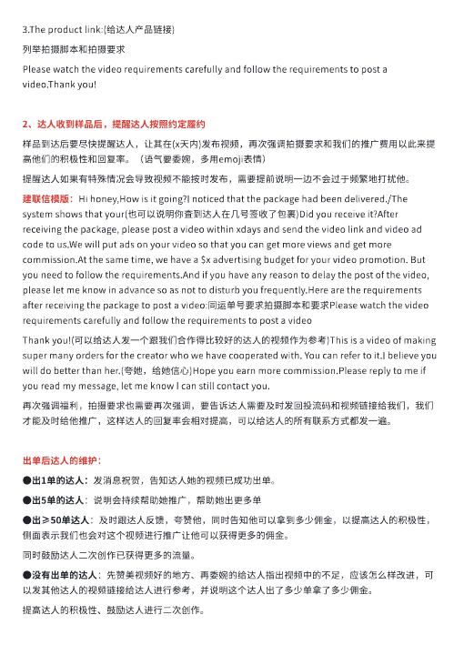
查看文字
3.The⟦U+0001⟧product⟦U+0001⟧link:(给达人产品链接)⟦U+0001⟧列举拍摄脚本和拍摄要求Please⟦U+0001⟧watch⟦U+0001⟧the⟦U+0001⟧video⟦U+0001⟧requirements⟦U+0001⟧carefully⟦U+0001⟧and⟦U+0001⟧follow⟦U+0001⟧the⟦U+0001⟧requirements⟦U+0001⟧to⟦U+0001⟧post⟦U+0001⟧a⟦U+0001⟧video.Thank⟦U+0001⟧you!⟦U+0001⟧2、达人收到样品后，提醒达人按照约定履约⟦U+0001⟧样品到达后要尽快提醒达人，让其在(x天内)发布视频，再次强调拍摄要求和我们的推广费用以此来提高他们的积极性和回复率。（语气要委婉，多用emoji表情）⟦U+0001⟧提醒达人如果有特殊情况会导致视频不能按时发布，需要提前说明一边不会过于频繁地打扰他。建联信模版：Hi⟦U+0001⟧honey,How⟦U+0001⟧is⟦U+0001⟧it⟦U+0001⟧going?I⟦U+0001⟧noticed⟦U+0001⟧that⟦U+0001⟧the⟦U+0001⟧package⟦U+0001⟧had⟦U+0001⟧been⟦U+0001⟧delivered./The⟦U+0001⟧system⟦U+0001⟧shows⟦U+0001⟧that⟦U+0001⟧your(也可以说明你査到达人在几号签收了包裹)Did⟦U+0001⟧you⟦U+0001⟧receive⟦U+0001⟧it?After⟦U+0001⟧receiving⟦U+0001⟧the⟦U+0001⟧package,⟦U+0001⟧please⟦U+0001⟧post⟦U+0001⟧a⟦U+0001⟧video⟦U+0001⟧within⟦U+0001⟧xdays⟦U+0001⟧and⟦U+0001⟧send⟦U+0001⟧the⟦U+0001⟧video⟦U+0001⟧link⟦U+0001⟧and⟦U+0001⟧video⟦U+0001⟧ad⟦U+0001⟧code⟦U+0001⟧to⟦U+0001⟧us.We⟦U+0001⟧will⟦U+0001⟧put⟦U+0001⟧ads⟦U+0001⟧on⟦U+0001⟧your⟦U+0001⟧video⟦U+0001⟧so⟦U+0001⟧that⟦U+0001⟧you⟦U+0001⟧can⟦U+0001⟧get⟦U+0001⟧more⟦U+0001⟧views⟦U+0001⟧and⟦U+0001⟧get⟦U+0001⟧more⟦U+0001⟧commission.At⟦U+0001⟧the⟦U+0001⟧same⟦U+0001⟧time,⟦U+0001⟧we⟦U+0001⟧have⟦U+0001⟧a⟦U+0001⟧$x⟦U+0001⟧advertising⟦U+0001⟧budget⟦U+0001⟧for⟦U+0001⟧your⟦U+0001⟧video⟦U+0001⟧promotion.⟦U+0001⟧But⟦U+0001⟧you⟦U+0001⟧need⟦U+0001⟧to⟦U+0001⟧follow⟦U+0001⟧the⟦U+0001⟧requirements.And⟦U+0001⟧if⟦U+0001⟧you⟦U+0001⟧have⟦U+0001⟧any⟦U+0001⟧reason⟦U+0001⟧to⟦U+0001⟧delay⟦U+0001⟧the⟦U+0001⟧post⟦U+0001⟧of⟦U+0001⟧the⟦U+0001⟧video,⟦U+0001⟧please⟦U+0001⟧let⟦U+0001⟧me⟦U+0001⟧know⟦U+0001⟧in⟦U+0001⟧advance⟦U+0001⟧so⟦U+0001⟧as⟦U+0001⟧not⟦U+0001⟧to⟦U+0001⟧disturb⟦U+0001⟧you⟦U+0001⟧frequently.Here⟦U+0001⟧are⟦U+0001⟧the⟦U+0001⟧requirements⟦U+0001⟧after⟦U+0001⟧receiving⟦U+0001⟧the⟦U+0001⟧package⟦U+0001⟧to⟦U+0001⟧post⟦U+0001⟧a⟦U+0001⟧video:同运单号要求拍摄脚本和要求Please⟦U+0001⟧watch⟦U+0001⟧the⟦U+0001⟧video⟦U+0001⟧requirements⟦U+0001⟧carefully⟦U+0001⟧and⟦U+0001⟧follow⟦U+0001⟧the⟦U+0001⟧requirements⟦U+0001⟧to⟦U+0001⟧post⟦U+0001⟧a⟦U+0001⟧video⟦U+0001⟧Thank⟦U+0001⟧you!(可以给达人发一个跟我们合作得比较好的达人的视频作为参考)This⟦U+0001⟧is⟦U+0001⟧a⟦U+0001⟧video⟦U+0001⟧of⟦U+0001⟧making⟦U+0001⟧super⟦U+0001⟧many⟦U+0001⟧orders⟦U+0001⟧for⟦U+0001⟧the⟦U+0001⟧creator⟦U+0001⟧who⟦U+0001⟧we⟦U+0001⟧have⟦U+0001⟧cooperated⟦U+0001⟧with.⟦U+0001⟧You⟦U+0001⟧can⟦U+0001⟧refer⟦U+0001⟧to⟦U+0001⟧it.I⟦U+0001⟧believe⟦U+0001⟧you⟦U+0001⟧will⟦U+0001⟧do⟦U+0001⟧better⟦U+0001⟧than⟦U+0001⟧her.(夸她，给她信心)Hope⟦U+0001⟧you⟦U+0001⟧earn⟦U+0001⟧more⟦U+0001⟧commission.Please⟦U+0001⟧reply⟦U+0001⟧to⟦U+0001⟧me⟦U+0001⟧if⟦U+0001⟧you⟦U+0001⟧read⟦U+0001⟧my⟦U+0001⟧message,⟦U+0001⟧let⟦U+0001⟧me⟦U+0001⟧know⟦U+0001⟧I⟦U+0001⟧can⟦U+0001⟧still⟦U+0001⟧contact⟦U+0001⟧you.⟦U+0001⟧再次强调福利，拍摄要求也需要再次强调，要告诉达人需要及时发回投流码和视频链接给我们，我们才能及时给他推广，这样达人的回复率会相对提高，可以给达人的所有联系方式都发一遍。出单后达人的维护：●出1单的达人：发消息祝贺，告知达人她的视频已成功出单。⟦U+0001⟧●出5单的达人：说明会持续帮助她推广，帮助她出更多单⟦U+0001⟧●出≥50单达人：及时跟达人反馈，夸赞他，同时告知他可以拿到多少佣金，以提高达人的积极性，侧面表示我们也会对这个视频进行推广让他可以获得更多的佣金。同时鼓励达人二次创作已获得更多的流量。●没有出单的达人：先赞美视频好的地方、再委婉的给达人指出视频中的不足，应该怎么样改进，可以发其他达人的视频链接给达人进行参考，并说明这个达人出了多少单拿了多少佣金。提高达人的积极性、鼓励达人进行二次创作。
第 14 页
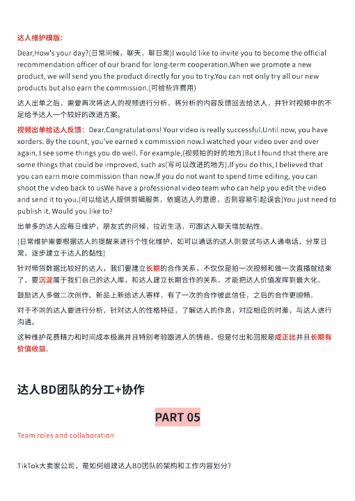
查看文字
达人维护模版：Dear,How's⟦U+0001⟧your⟦U+0001⟧day?(日常问候，聊天，聊日常)I⟦U+0001⟧would⟦U+0001⟧like⟦U+0001⟧to⟦U+0001⟧invite⟦U+0001⟧you⟦U+0001⟧to⟦U+0001⟧become⟦U+0001⟧the⟦U+0001⟧official⟦U+0001⟧recommendation⟦U+0001⟧officer⟦U+0001⟧of⟦U+0001⟧our⟦U+0001⟧brand⟦U+0001⟧for⟦U+0001⟧long-term⟦U+0001⟧cooperation.When⟦U+0001⟧we⟦U+0001⟧promote⟦U+0001⟧a⟦U+0001⟧new⟦U+0001⟧product,⟦U+0001⟧we⟦U+0001⟧will⟦U+0001⟧send⟦U+0001⟧you⟦U+0001⟧the⟦U+0001⟧product⟦U+0001⟧directly⟦U+0001⟧for⟦U+0001⟧you⟦U+0001⟧to⟦U+0001⟧try.You⟦U+0001⟧can⟦U+0001⟧not⟦U+0001⟧only⟦U+0001⟧try⟦U+0001⟧all⟦U+0001⟧our⟦U+0001⟧new⟦U+0001⟧products⟦U+0001⟧but⟦U+0001⟧also⟦U+0001⟧earn⟦U+0001⟧the⟦U+0001⟧commission.(可给些许费用)⟦U+0001⟧达人出单之后，需要再次将达人的视频进行分析，将分析的内容反馈回去给达人，并针对视频中的不足给予达人一个较好的改进方案。视频出单给达人反馈：Dear.Congratulations!⟦U+0001⟧Your⟦U+0001⟧video⟦U+0001⟧is⟦U+0001⟧really⟦U+0001⟧successful.Until⟦U+0001⟧now,⟦U+0001⟧you⟦U+0001⟧have⟦U+0001⟧xorders.⟦U+0001⟧By⟦U+0001⟧the⟦U+0001⟧count,⟦U+0001⟧you've⟦U+0001⟧earned⟦U+0001⟧x⟦U+0001⟧commission⟦U+0001⟧now.I⟦U+0001⟧watched⟦U+0001⟧your⟦U+0001⟧video⟦U+0001⟧over⟦U+0001⟧and⟦U+0001⟧over⟦U+0001⟧again.⟦U+0001⟧I⟦U+0001⟧see⟦U+0001⟧some⟦U+0001⟧things⟦U+0001⟧you⟦U+0001⟧do⟦U+0001⟧well.⟦U+0001⟧For⟦U+0001⟧example,(视频拍的好的地方)But⟦U+0001⟧I⟦U+0001⟧found⟦U+0001⟧that⟦U+0001⟧there⟦U+0001⟧are⟦U+0001⟧some⟦U+0001⟧things⟦U+0001⟧that⟦U+0001⟧could⟦U+0001⟧be⟦U+0001⟧improved,⟦U+0001⟧such⟦U+0001⟧as(写可以改进的地方).If⟦U+0001⟧you⟦U+0001⟧do⟦U+0001⟧this,⟦U+0001⟧I⟦U+0001⟧believed⟦U+0001⟧that⟦U+0001⟧you⟦U+0001⟧can⟦U+0001⟧earn⟦U+0001⟧more⟦U+0001⟧commission⟦U+0001⟧than⟦U+0001⟧now.If⟦U+0001⟧you⟦U+0001⟧do⟦U+0001⟧not⟦U+0001⟧want⟦U+0001⟧to⟦U+0001⟧spend⟦U+0001⟧time⟦U+0001⟧editing,⟦U+0001⟧you⟦U+0001⟧can⟦U+0001⟧shoot⟦U+0001⟧the⟦U+0001⟧video⟦U+0001⟧back⟦U+0001⟧to⟦U+0001⟧usWe⟦U+0001⟧have⟦U+0001⟧a⟦U+0001⟧professional⟦U+0001⟧video⟦U+0001⟧team⟦U+0001⟧who⟦U+0001⟧can⟦U+0001⟧help⟦U+0001⟧you⟦U+0001⟧edit⟦U+0001⟧the⟦U+0001⟧video⟦U+0001⟧and⟦U+0001⟧send⟦U+0001⟧it⟦U+0001⟧to⟦U+0001⟧you.(可以给达人提供剪辑服务，依据达人的意愿，否则容易引起误会)You⟦U+0001⟧just⟦U+0001⟧need⟦U+0001⟧to⟦U+0001⟧publish⟦U+0001⟧it.⟦U+0001⟧Would⟦U+0001⟧you⟦U+0001⟧like⟦U+0001⟧to?⟦U+0001⟧出单多的达人应每日维护，朋友式的问候，拉近生活，可跟达人聊天增加粘性。(日常维护需要根据达人的提醒来进行个性化维护，如可以通话的达人则尝试与达人通电话，分享日常，逐步建立于达人的黏性)⟦U+0001⟧针对带货数据比较好的达人，我们要建立⻓期的合作关系，不仅仅是拍一次视频和做一次直播就结束了，要沉淀属于我们自己的达人库，和达人建立⻓期合作的关系，才能把达人价值发挥到最大化。鼓励达人多做二次创作、新品上新给达人寄样，有了一次的合作彼此信任，之后的合作更顺畅。对于不同的达人要进行分析，针对达人的性格特征，了解达人的作息，对应相应的时差，与达人进行沟通。这种维护花费精力和时间成本极高并且特别考验跟进人的情商，但是付出和回报是成正比并且⻓期有价值收益。达人BD团队的分工+协作⟦U+0001⟧PART⟦U+0001⟧05⟦U+0001⟧Team⟦U+0001⟧roles⟦U+0001⟧and⟦U+0001⟧collaboration⟦U+0001⟧TikTok大卖家公司，是如何组建达人BD团队的架构和工作内容划分？⟦U+0001⟧
第 15 页
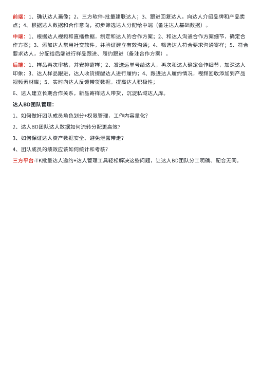
查看文字
前端：1、确认达人画像；2、三方软件-批量建联达人；3、跟进回复达人，向达人介绍品牌和产品卖点；4、根据达人数据和合作意向，初步筛选达人分配给中端（备注达人基础数据）。⟦U+0001⟧中端：1、根据达人视频和直播数据，制定和达人的合作方案；2、和达人沟通合作方案细节，确定合作方案；3、添加达人常用社交软件，并验证建立有效沟通；4、筛选达人符合要求沟通寄样；5、符合要求达人，分配给后端进行样品跟进、履约跟进（备注合作方案）。后端：1、样品再次审核，并安排寄样；2、发送运单号给达人，再次和达人确定合作细节，加深达人印象；3、达人样品跟进，达人收货提醒达人进行履约；4、跟进达人履约情况，视频回收添加到产品视频素材库；5、实时向达人反馈带货数据，提高达人积极性；⟦U+0001⟧6、达人建立⻓期合作关系，新品寄样达人带货，沉淀私域达人库。⟦U+0001⟧达人BD团队管理：⟦U+0001⟧1、如何做好团队成员⻆色划分+权限管理，工作内容量化？⟦U+0001⟧2、达人BD团队达人数据如何流转分配更高效？⟦U+0001⟧3、如何保证达人资产数据安全、避免泄露带走？⟦U+0001⟧4、团队成员的绩效应该如何统计和考核？⟦U+0001⟧三方平台-TK批量达人邀约+达人管理工具轻松解决这些问题，让达人BD团队分工明确、配合无间。